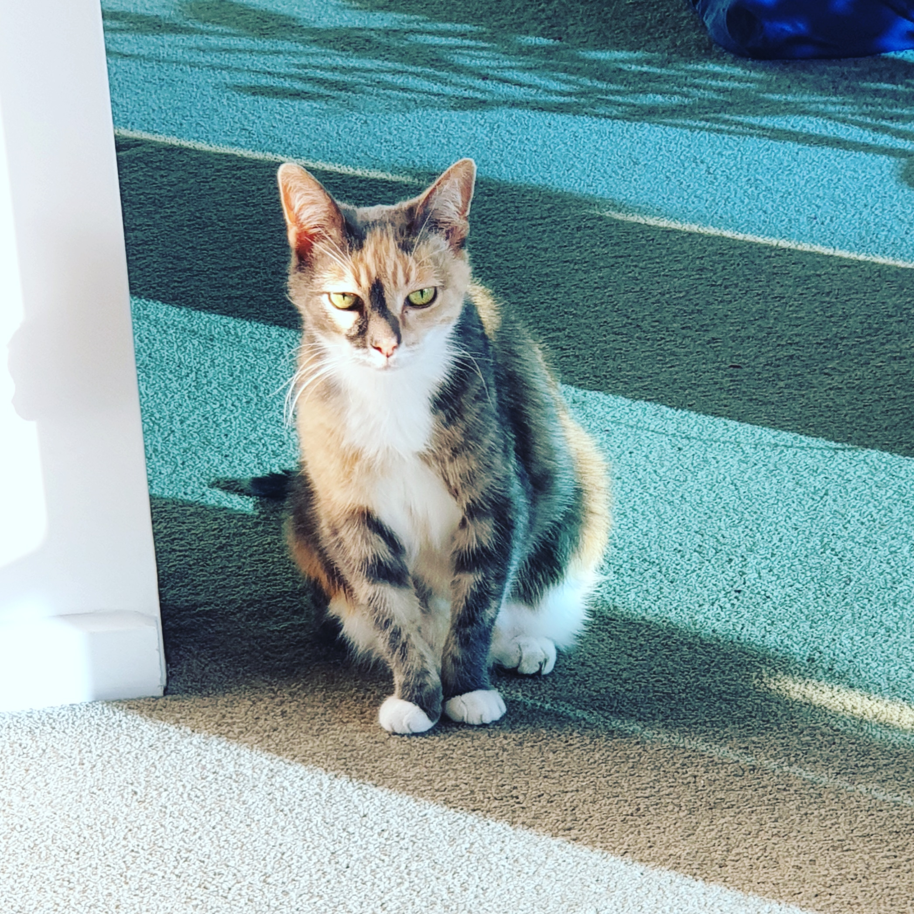
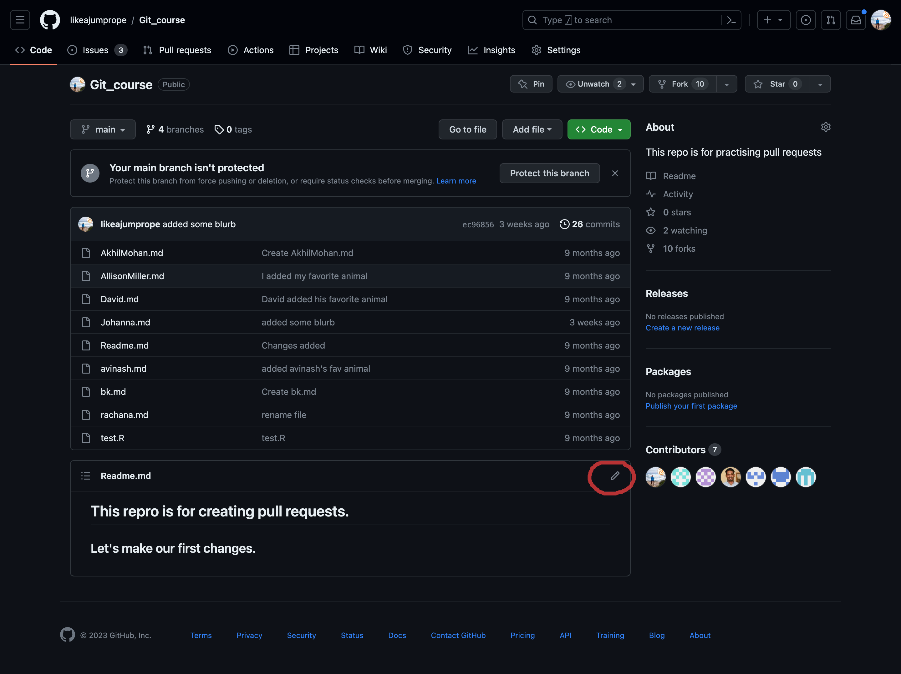
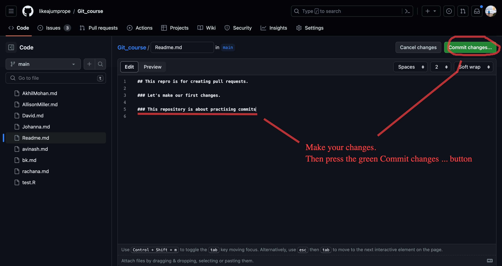
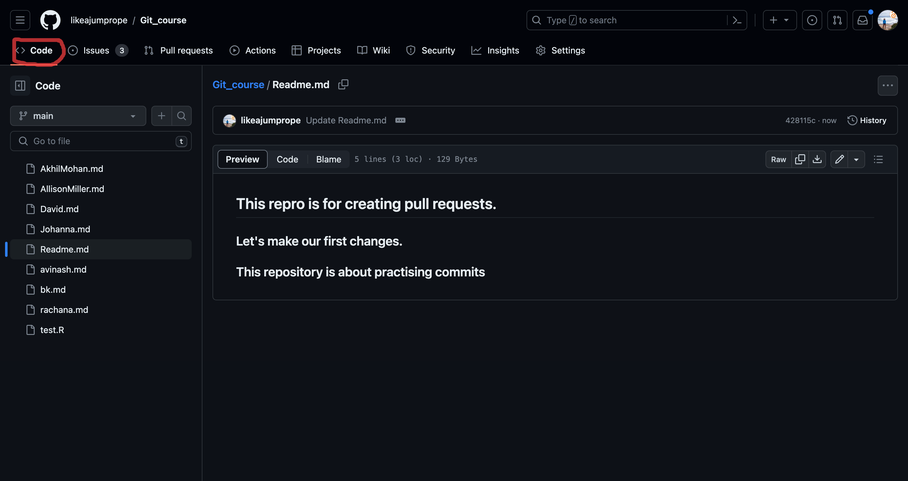

Your first commit
The Readme.md
We just created a README.md file when initializing your first repository.
The README.md is often the first item a visitor will see when visiting your repository. README files typically include information on:
The purpose and content of the rpository
how to contribute to the repository (sometimes separated in a different file called Contributing.md)
The ending .md is an indicator of the Markdown language. Markdown is a lightweight markup language that you can use to add formatting elements to plaintext text documents. The documents for this website are also written in Markdown.
Examples of the Markdown language:
Headlines
The number of # determine the level of the headline:
# A first level heading
## A second level heading
## A third level headingA first level heading
A second level heading
A third level heading
Images
 renders to:

Weblinks
This is a link to the [VALA TECH CAMP website.](https://www.vala.org.au/vala-events/tech-camp/tech-camp-2023-program-announcement/) renders to:
This is a link to the VALA TECH CAMP website.
You can learn about the markdown language here at this official resource and at this resource from Github.
Challenge: Your first commit in markdown
Commits on Github
What is a commit
The contribution in Git is structured in commits. Commits are small, labeled changes to a file or item in a git repository. They can be seen as a snapshot of the state of repository at the time of the commit which can be reversed back to (in theory). They hence allow to create a track record of changes of the repository over time. Git will not allow any changes to documents or files without committing them first.

Committing on Github.com
Challenge: Add some information to the Readme.md file of your newly created github repository!
Click on your newly created repository.
Click on the pencil icon to activate writing mode on the Readme.md

Click on the pencil button to activate editing mode. Add some information about the purpose of the repository.
Click the green Commit changes button at the top right.

Make your changes and click the green commit changes button. Write a precise commit message.

Formulate a precise commit message. Commit your changes.
Congratulations! You have made your first commit in Github!
Reviewing your changes.
Congratulations, you have now made your first commit on Github!
Let’s now have a look at the changes you have made.
Challenge: Review your first commit.
- Go back to the Code section of the repository.

- The repository should show you that changes have been made not long ago. Click the history button.

- Click on the Readme.md commit.

- Additions to the file will be shown in green (and deletions in red),

Challenge: Add another line to the readme and delete the first one. Commit your changes with an appropriate commit message. What do the changes look like now?
Final remarks - committing
Always commit your changes! While changes might be saved by your operating system, git only tracks changes once they are committed.